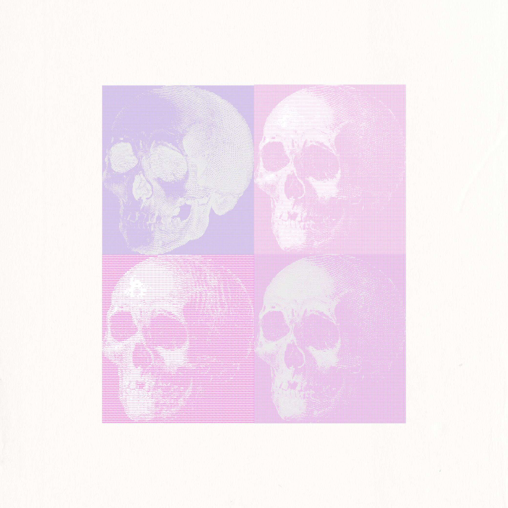
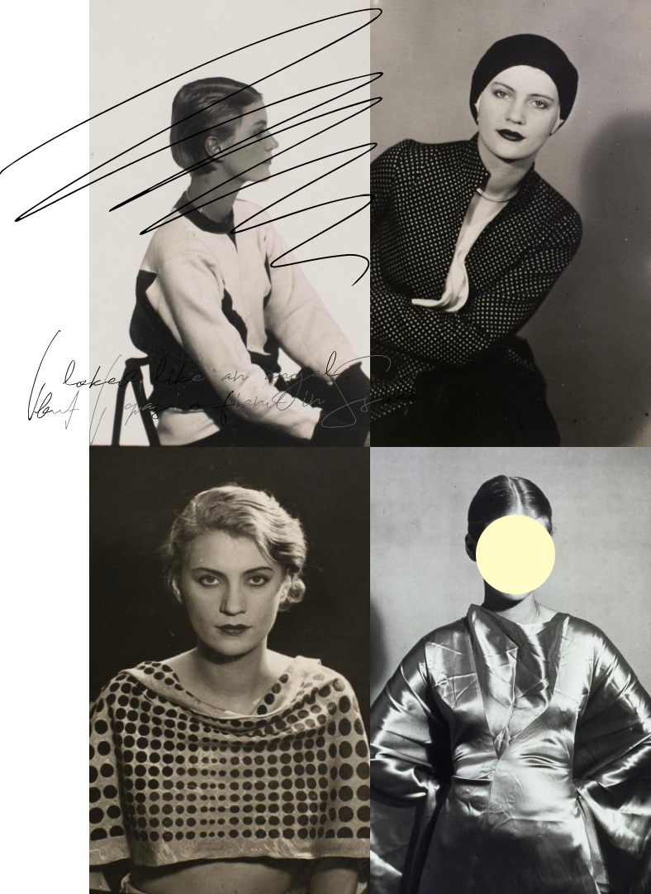
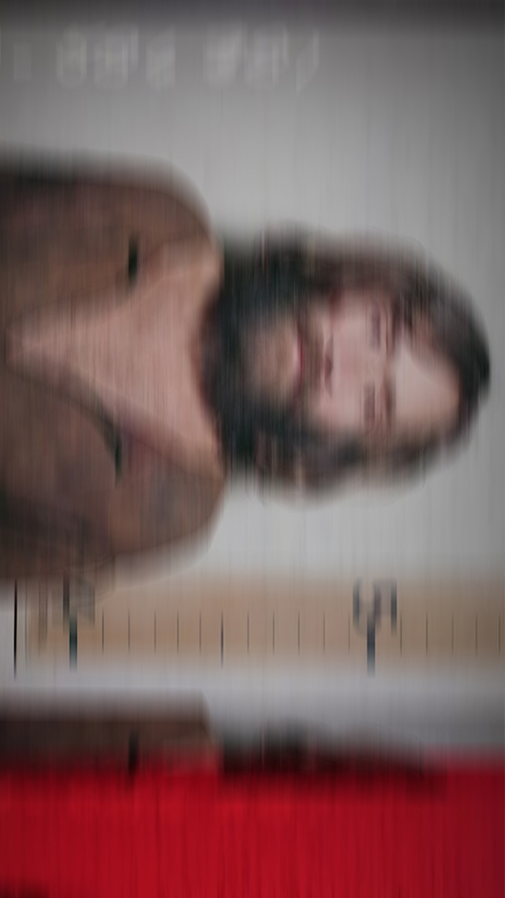
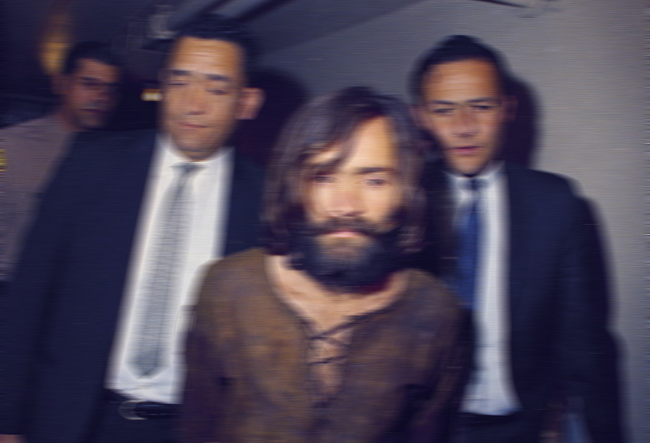

Excess skin has long been an issue among patients who’ve had bariatric surgery, which makes the stomach smaller, or otherwise lost weight rapidly. But over the past few years, doctors say they’re seeing loose skin much more often as new obesity drugs —like Ozempic, Zepbound and Wegovy—become more powerful and commonplace.
It is not uncommon for unexploded bombs from 20th-century conflicts to be uncovered in Austria, though accidents like this one appear to be rare. To dispense with the obvious: It’s hard to imagine a president as unlike Donald Trump as Jimmy Carter, with his radically different approach to governing and to morality. But it’s also hard to miss the structural similarities between our time and the era that brought down Carter and shifted political and economic thinking globally to the right, as reflected in the rise of Ronald Reagan in the United States and Margaret Thatcher in Britain. It’s not just that Iran has reoccupied center stage or that fear of stagflation looms again, even if this economy is different in important ways from the old one. In the late 1970s, Americans sensed that their country was growing weaker in the world, in the wake of the Vietnam debacle and as the Soviet invasion of Afghanistan and the Iranian hostage crisis set in. Today, they see it as enfeebled because of Mr. Trump’s assault on longstanding alliances, his devastation of America’s moral standing with his deranged threat to wipe out Iran’s “whole civilization” and his pursuit of a war without a coherent strategy or clear objectives.
During a call from her house in Los Angeles, Kardashian discussed the beauty of motherhood, her workout routine and what snacks she likes to keep on hand. These are edited excerpts from the conversation.
Instead of waiting until morning, I decided to start immediately. I planned to finish all my work that day, get home and sit for 20 minutes before bed. After all, Bryant also did it at night before games, and I was eager to begin. But my brain was already spent. Instead of observing my thoughts with curiosity, I felt a little overwhelmed by them.

I'm Jesus Christ, whether you want to accept it or not, I don't care.
I can't judge any of you. I have no malice against you and no ribbons for you. But I think that it is high time that you all start looking at yourselves, and judging the lie that you live in.
Look down at me and you see a fool, Look up at me and you see a god, Look straight at me and you see yourself.
Do you feel blame? Are you mad? Uh, do you feel like wolf kabob Roth vantage? Gefrannis booj pooch boo jujube; bear-ramage. Jigiji geeji geeja geeble Google. Begep flagaggle vaggle veditch-waggle bagga? The mind is endless. You put me in a dark solitary cell, and to you that's the end, to me it's the beginning, it's the universe in there, there's a world in there, and I'm free.

I have ate out of your garbage cans to stay out of jail. I have wore your second-hand clothes. I have done my best to get along in your world and now you want to kill me, and I look at you, and then I say to myself, You want to kill me? Ha! I’m already dead, have been all my life. I’ve spent twenty-three years in tombs that you built.